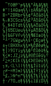

I spent some time looking around the net to find a font that mimics DEC VT220 terminal glyph appearance. There is none. There are some old bitmapped fonts from X11 and probably early MacOS distributions that claim to be DEC fonts, they are functional but their visual quality is lacking and nostalgic value is absent. What I wanted was a font that fills my virtual terminal window with the magic hacking glow.
I was lucky to find this article, that describes how exactly VT220 characters were formed on screen and it turns out that they're not a straight 1:1 bit-to-pixel representation. The author also made a brilliant sample of how the ROM bits are converted into what we see. Unfortunately, the sample given is only a PNG image and it can't be loaded as a font into a terminal emulator. Fortunately, modern displays can display characters that look exactly like this without special circuitry used in the original DEC terminals and there is free software that can be used to create a usable outline font out of a PNG image.
First I found FontForge. FontForge is a free application that can be used to design and convert all kinds of fonts: raster, stroked and outline. At first the program is intimidating, but there are nice docs and tutorials on its site. After some reading and poking around I got an impression that it can be used to trace a font from bitmaps. That lead to installing another interesting software piece called potrace. This is an autotrace software bundle that does awesome job of converting raster images into vectors but has no user interface at all. Luckily, FontForge is able to interface with potrace transparently so I didn't have to care about that at all. So I did a quick test with one character only, traced it, saved as TTF font, installed it into the system and I got myself my own font with only one glyph. It was looking nice but there should be about 120 of them in a usable font and at least 256 glyphs are given in the sample so it would be a waste not to use them all.
A tutorial here describes how to autotrace many characters at once. To make loading many glyph images easier, FontForge understands file names in a common notation like "uXXXX.png", where XXXX is a hexadecimal unicode character code. The original sample image should be sliced into 256 little PNG files. To do this automatically I wrote a little Python script that does the mincing job using ImageMagick's convert utility.
import os
conv='c:\program files\imagemagick\convert.exe'
for ccode in range(256):
x = ccode / 16
y = ccode % 16
ofile = 'u%04x.png' % ccode
os.spawnl(os.P_WAIT, conv,
'convert.exe', '-extract', '10x20+%d+%d' % (x*10,y*20),
'-modulate', '200,0,0', '-negate',
'-filter', 'point', '-resize', '400%',
'g.png', ofile)
What it does is: slice a piece of 10×20 pixels at locations defined by 10*x,20*y, for all 256 grid locations. The cutout pieces are then desaturated and have their contrast maxed out, inverted and resized to 400% without smoothing. What I didn't take into account is that FontForge doesn't like PNG other than 1-bit indexed colour, so I had to do that conversion manually later. This could also be done by adding '-colors 2' option to the argument list in the above script. After running this script and some more fiddling I had a bunch of PNG files that look like this:
I also normally need Cyrillic character set. This was a little bit of a complication because older DEC terminals didn't have Cyrillic character set and I couldn't find any authentic reference material. Fortunately, I was able to locate down-line-loadable (that's DEC-speak!) versions of Cyrillic fonts for VT200 family of terminals that are old enough to be considered canon. They were in native ESC-sequence format and they had to be converted into PNG images somehow. I wrote another Python script that loads font definition and saves found characters as images. Writing PNG images is easy thanks to PyPNG library. Now I had these too:
The part that I didn't really get is how FontForge is handling Unicode pages other than default page. I had to manually enter U+0400... codes for every Cyrillic character glyph. This is silly and annoying. I'm not sure how it's supposed to be done. After following the autotrace tutorial I had all glyphs in vector form. Then I had to rearrange Cyrillic characters that were coming in wrong order initially, but it was a relatively easy task.
There are some font settings that I still don't understand, too. The relationships between screen DPI, pixel size, point size etc are beyond me. The resulting font is a little funny that way: on Mac and Linux you need to specify size 20 (or a multiply of that) to have crisp image without antialiasing and antialiasing allows some different sizes look decent too. This is only natural because the characters are traced from bitmaps that are 20 pixels high. On Windows however this is much less obvious as the font size needs to be specified as 15 (or multiplies of 15). This will result in pixel-to-pixel representation of the original glyphs.
Other than that, making a simple TTF font is a matter of careful slicing, loading, tracing, defining metadata and saving in the right format.
Download: Glass TTY VT220 (TrueType) — Use size 20 on Mac/Linux, size 15 in Windows. You will probably have to enter these numbers manually because they are not in the standard size grid.
Reference Info
Everything about DEC terminalsSoft downloadable Cyrillic fonts for VT family of terminals (archive.org)